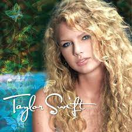

- Midnights
- Midnights has the vibes of all her albums and deep ideas that kept her up at night. It is incredibly relatable.
- Would've, Could've Should've
- Anti-Hero
- Hits Different
- Paris
- You're on Your Own Kid
- Maroon
- Midnight Rain
- Sweet Nothing
- Reputation
- Reputations revenge meets true love theme is iconic. And, the concert was the most incredible concert I have ever been to.
- Don't Blame Me
- Call it What You Want
- I Did Something Bad
- New Year's Day
- Gorgeous
- Lover
- Happy love songs and immaculate vibes
- Daylight
- Cruel Summer
- I Think He Knows
- Lover
- The Man
- Cornelia Street

- Red (Taylor's Version)
- Jake Gyllenhal needs to return her scarf
- All Too Well(10 minute version)
- The Very First Night
- Holy Ground
- Starlight
- Better Man
- The Moment I Knew
- Stay,Stay,Stay

- Speak Now
- I hate John Mayer. Only lower because she has yet to release Taylor's Version.
- Enchanted
- Mine
- Long Live
- Haunted
- Mean
- Fearless (Taylor's Version)
- this album was my childhood
- Fearless
- Fifteen
- The Way I Loved You
- White Horse
- Hey Stephen
- Change
- Today Was a Fairytale
- 1989
- I LOVE HARRY STYLES. It is lower because Taylor has not released her version with vault tracks yet.
- I Wish You Would
- Blank Space
- This Love(Taylor's Version)
- Wonderland
- Out of the Woods
- Style
- All you Had To Do Was Stay
- Debut
- PLEASE I NEED TAYLOR'S VERSION
- I'd Lie
- I <3?
- Tim Mcgraw
- Mary's Song
- Our Song
- Stay Beautiful
- I'm Only Me When I'm With You
- 
- Folklore
- This is very controversial but I like to be a little wild. I am not a huge indie fan but her stories are incredible.
- Betty
- August
- Exile
- Last Great American Dynasty
- the 1
- Mad Women
- Evermore
- Same reasoning for folklore.
- Champagne Problems (one of the best bridges of all time)
- Willow
- no body, no crime
- Majorie
My Favorite Taylor Swift Albums in order (with my favorites from each album listed)